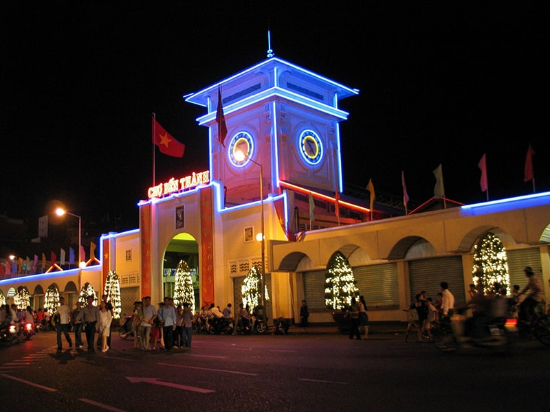
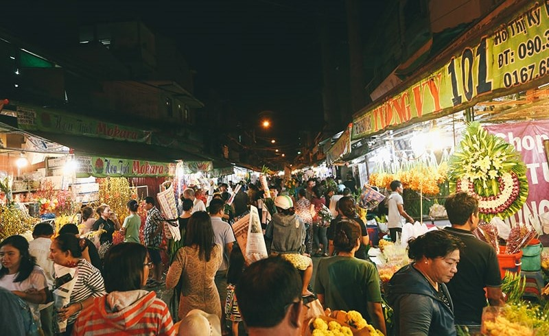
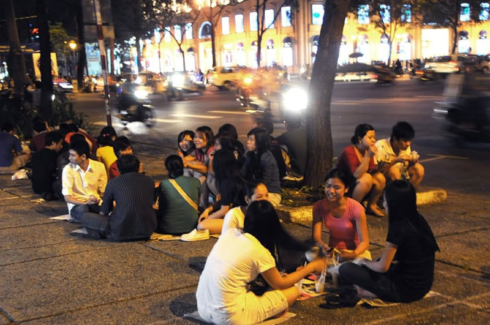
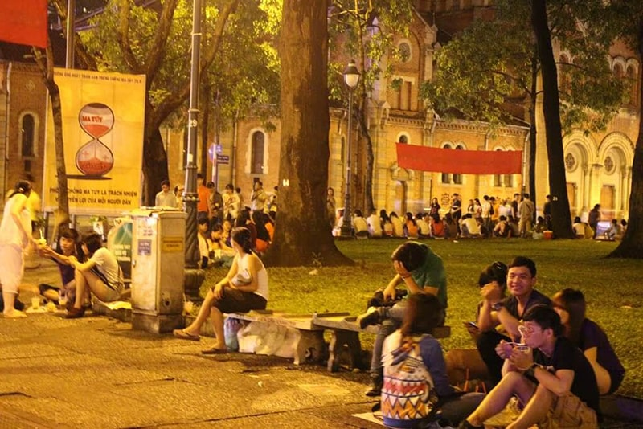
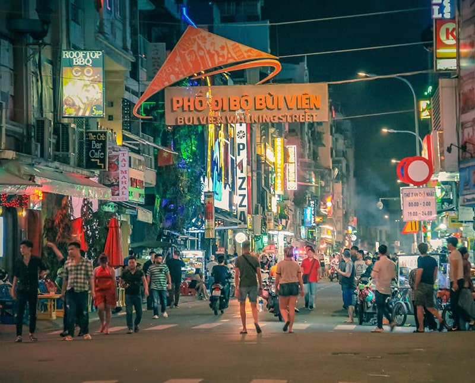
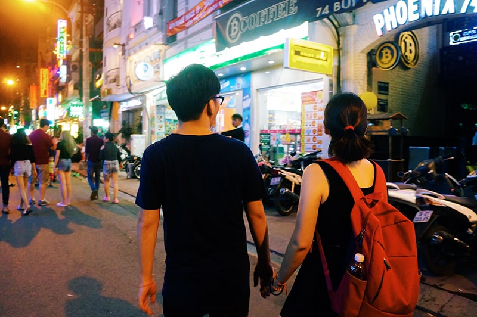
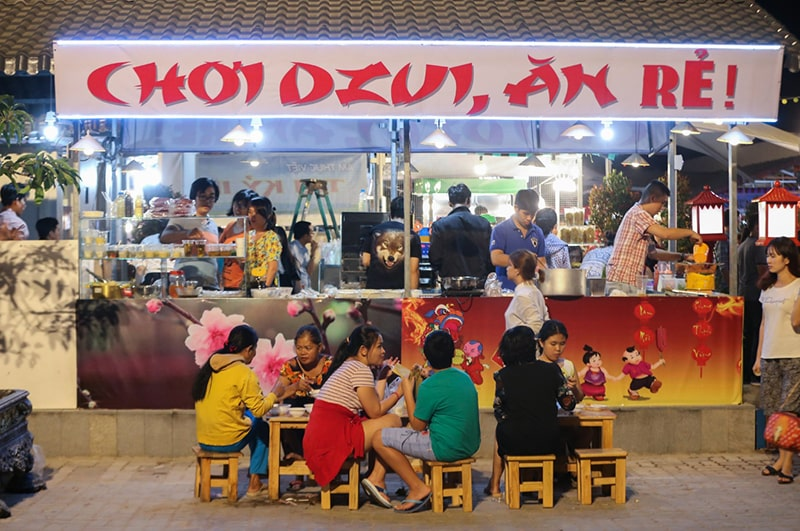
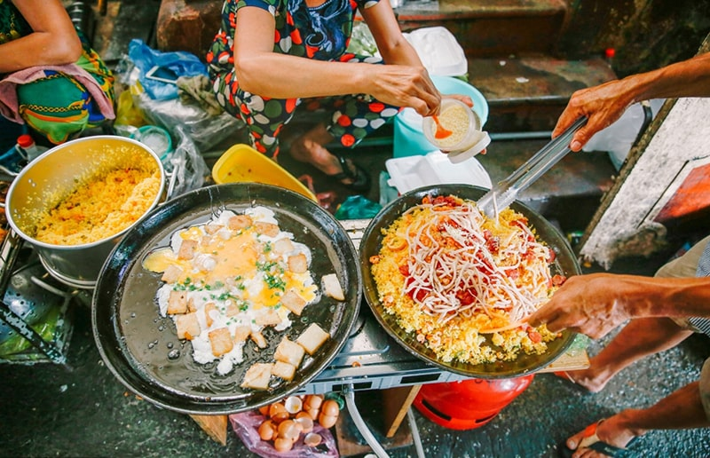
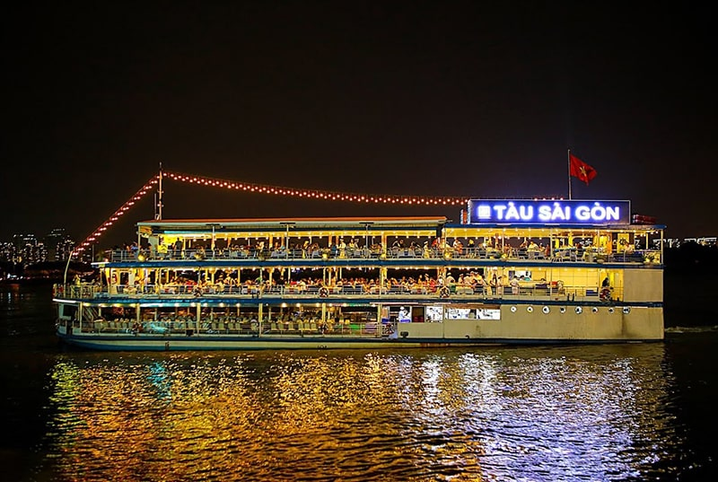
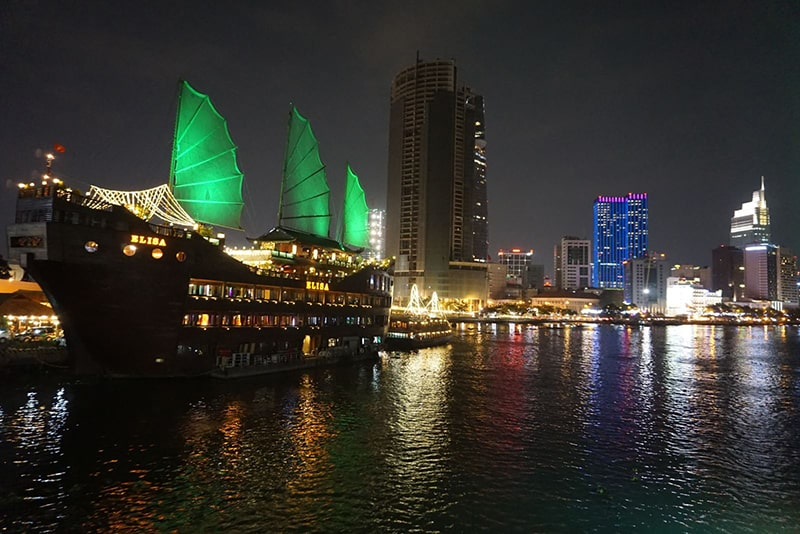

Những trải nghiệm thú vị khi du lịch Sài Gòn về đêm
1. Lang thang chợ đêm Sài Gòn
Sài Gòn nổi tiếng với những khu chợ đêm nhộn nhịp. Chợ Bến Thành thu hút du khách bởi sự tấp nập và náo nhiệt nơi đây.
Khi lang thang ở phố đi bộ trong chợ, các bạn dễ gặp các du khách đến từ nhiều nước khác nhau, người Anh, Hoa, Việt, Nhật… hòa lẫn vào nhau, tạo nên một bầu không khí nhộn nhịp nhưng rất thân tình giữa du khách và người bản xứ.
Ngoài chợ Bến Thành, các bạn có thể tham quan nhiều khu chợ đêm nổi tiếng khác của Sài Gòn như chợ đêm Hạnh Thông Tây, chợ đêm Kỳ Hòa, chợ hoa đêm Hồ Thị Kỷ…
2. Thưởng thức cà phê bệt Sài Gòn
Cà phê Sài Gòn đã trở thành một nét văn hóa quen thuộc và người dân thành phố cũng không còn xa lạ gì với cà phê bệt. Có lẽ không đâu lại nhiều địa điểm cafe bệt như Sài Gòn.
Đây là một cách thưởng thức cà phê mang đậm phong cách Việt. Chỉ cần nơi nào mát mát, có cây to, có chỗ ngồi là đã có thể trở thành một địa điểm bệt lý tưởng.
Các địa điểm cafe bệt nhộn nhịp nhất Sài Gòn có thể kể đến khu vực nhà thờ Đức Bà, hồ Con Rùa và khu vực trước cổng nhà hát lớn.
Những nhóm bạn đến đây trò chuyện, đàn hát, rèn luyện ngoại ngữ … tuy mỗi người một mục đích khác nhau, nhưng luôn mang đến cảm giác cởi mở và chia sẻ cho những người xung quanh.
Có lẽ, không có không gian mở nào ở Sài Gòn có thể thể hiện rõ nét tính phóng khoáng của dân Sài Gòn như cafe bệt, vì thế, nếu có dịp ghé thăm Sài Gòn, hãy thử một lần đi cùng bạn bè để tận hưởng cảm giác thoải mái và nhộn nhịp của cafe bệt Sài Gòn bạn nhé!
3. Dạo Phố Tây Sài Gòn về đêm
Đây là khu phố tập trung khá đông người nước ngoài sinh sống và cũng là nơi tập trung những khách sạn, quán ăn, nhà hàng sang trọng, cao cấp bậc nhất Sài Gòn.
Được mệnh danh là con phố không bao giờ ngủ của Sài Gòn, phố này luôn nhộn nhịp và ồn ào. Những hàng quán mở cửa xuyên đêm thu hút nhiều du khách tây và ta. Chỉ với một chai bia, một cái ghế đẩu cùng ngồi trò chuyện cùng lũ bạn trong một không gian nhộn nhịp đầy ắp tiếng nói, tiếng cười.
Khách đến phố Phố Tây không chỉ có khách nước ngoài mà còn có cả khách trong nước. Họ chọn các khách sạn tại đây vì giá rẻ mà lại nằm giữa trung tâm thành phố, chỉ cần đi bộ 10 phút là ra đến chợ Bến Thành, nhà hát thành phố và nhà thờ Đức Bà
Du khách ban ngày có thể đi tham quan những địa điểm trong thành phố như Dinh Độc Lập, nhà hát thành phố, nhà thờ Đức Bà, bưu điện thành phố, bến Nhà Rồng, tối trở về phố Tây nghỉ ngơi, ăn uống và thư giãn.
Đêm ở phố Tây luôn rực rỡ ánh đèn và đa dạng những sắc màu văn hoá. Đến và tận hưởng không gian hiện đại của phố Tây nằm giữa Hòn Ngọc Viễn Đông Sài Gòn thật sự là một trải nghiệm bạn không nên bỏ lỡ khi dạo phố Sài Gòn đêm.
Ăn khuya
Nhiều người thường bảo Sài Gòn không có ẩm thực của riêng mình. Chẳng hạn khi nhắc đến Hà Nội, chúng ta nghĩ ngay đến bát phở nghi ngút khói trong phố cổ, nhắc đến Huế là vị cay nồng của bún bò, nhắc về Nha Trang chúng ta nghĩ đến những món hải sản tươi ngon.
Thế nhắc đến ẩm thực Sài Gòn, chúng ta nghĩ đến gì nào? Câu trả lời có thể là tất cả các món trên.
Đến với Sài Gòn, các bạn có thể đến thưởng thức phở Lệ trên Võ Văn Tần, bún bò Huế trên đường Nguyễn Du, cơm tấm 114 Võ Thị Sáu, phố ốc Trần Hưng Đạo , phố ốc khu quận 4, phố nướng Cali Nguyễn Đình Chiểu, lẩu cá kèo Bà Huyện Thanh Quan …
5. Du thuyền ở bến Bạch Đằng
Bến Bạch Đằng là một địa chỉ thú vị mà các bạn trẻ ở Sài Gòn thường lui tới.
Khung cảnh xung quanh đều nhìn ra phía sông Sài Gòn rất lãng mạn, phía xa bờ những dãy nhà cao sừng sững với nhiều ánh đèn lấp lánh đầy sang trọng. Check in tại địa điểm này chắc chắn bạn sẽ có những bức ảnh đẹp lung linh không kém phần mờ ảo đâu.
Ngoài ra, tại đây còn có du thuyền phục vụ những vị khách muốn tham quan, ngắm nhìn cảnh sắc hoa lệ của Sài Gòn lúc về đêm và thưởng thức những món ăn ngon được nấu bởi những đầu bếp danh tiếng Sài Gòn bên ly rượu vang dịu dàng.
© 2021 Mollyclo. All Rights Reserved.
VỀ MOLLYCLO
- Về chúng tôi
- Mollyclo Blog
- Hợp tác cùng chúng tôi
- Cơ hội nghề nghiệp
ĐỐI TÁC
- Đối tác đăng nhập
- Đối tác liên kết
- Chương trình cho người nổi tiếng
- Chương trình cho Đại lý
ĐIỀU KHOẢN SỬ DỤNG
- Điều khoản sử dụng
- Quyền riêng tư
- Chính sách Cookie
- Thưởng phát hiện lỗi phần mềm
- Chính sách và quy định
KÊNH THANH TOÁN